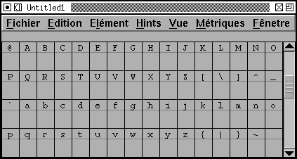

CASCA: Ay, he spoke Greek.
CASSIUS: To what effect?
CASCA: Nay, an I tell you that, I'll ne'er
look you i' the face again: but those that
understood him smiled at one another and
shook their heads; but, for mine own
part, it was Greek to me.Julius Caesar, I, ii
Shakespeare
CHAPLAIN:...legal matters and so forth
Are Greek to me; except of course
That I understand Greek.The Lady's not for Burning, II
Christopher Fry
FontForge uses a standard mechanism called gettext to provide translations of user interface strings into different language. Gettext is described profusely at the gettext site, the following are some brief notes on what you need to know to translate FontForge's UI.
In a gettext based package, the translatable strings live in a "pot" file. In FontForge's case it is called "FontForge.pot".
You can download the current version of this file from here; it will be updated at least each time I make a release and possibly more frequently.
After you have downloaded one of these packages, either copy the tarball to where you are, or move to the directory containing the tarball (I can't provide explicit instructions here, because I don't know where your browser put the file) and type (do not type "$"):
$ bunzip2 FontForge.pot.bz2
Then edit the file FontForge.pot.
This is a better solution because it gives you a current version of the pot file. Create a git repository as described in the section on building from source. Having done that type
$ cd fontforge $ make -f Makefile.in FontForge.pot
The Bellman looked uffish, and wrinkled his brow,
`If only you'd spoken before!
It's excessively awkward to mention it now,
With the Snark, so to speak, at the door!'`We should all of us grieve, as you may well believe
If you never were met with again-
But surely, my man, when the voyage began
You might have suggested it then?'`It's excessively awkward to mention it now
As I think I've already remarked.'
And the man they called "Hi!" replied with a sigh,
`I informed you the day we embarked.'`You may charge me with murder- or want of sense-
(We are all of us weak at times):
But the slightest approach to a false pretense
Was never among my crimes!'`I said it in Hebrew- I said it in Dutch-
I said it in German and Greek:
But I wholly forgot (and it vexes me much)
That English is what you speak!'The Hunting of the Snark, Lewis Carroll
You should now have a FontForge.pot file (if you don't see the above section on how to get one).
The pot file is in the same format as the "po" file which you need to generate. Simply rename FontForge.pot to the language/locale that you are working on. In most cases you will probably want to rename it just to the language
$ mv FontForge.pot fr.po
But sometimes that will not be enough. For example, Traditional and simplified chinese are sufficiently different that a locale must also be specified:
$ mv FontForge.pot zh_TW.po
Once you have created your po file it is time to start modifying it. I shall use French as an example in the following (because I almost speak French), obviously you will need to make changes appropriate for your language.
The po file begins with some lines like:
# (American) English User Interface strings for FontForge. # Copyright (C) 2000-2006 by George Williams # This file is distributed under the same license as the FontForge package. # George Williams, <pfaedit@users.sourceforge.net>, 2006. # #, fuzzy msgid "" msgstr "" "Project-Id-Version: PACKAGE VERSION\n" "POT-Creation-Date: 2006-08-19 07:32-0700\n" "PO-Revision-Date: YEAR-MO-DA HO:MI+ZONE\n" "Last-Translator: FULL NAME <EMAIL@ADDRESS>\n" "Language-Team: LANGUAGE <LL@li.org>\n" "MIME-Version: 1.0\n" "Content-Type: text/plain; charset=CHARSET\n" "Content-Transfer-Encoding: 8bit\n" "Plural-Forms: nplurals=INTEGER; plural=EXPRESSION;\n"
You should change this to:
# (French) French User Interface strings for FontForge. # Copyright (C) 2004-2006 by Pierre Hanser & Yannis Haralambous # This file is distributed under the same license as the FontForge package. # #, fuzzy msgid "" msgstr "" "Project-Id-Version: 20060821\n" "POT-Creation-Date: 2006-08-19 07:32-0700\n" "PO-Revision-Date: 2006-08-20 14:46+0100\n" "Last-Translator: Pierre Hanser\n" "Language-Team: French <LL@li.org>\n" "MIME-Version: 1.0\n" "Content-Type: text/plain; charset=UTF-8\n" "Content-Transfer-Encoding: 8bit\n" "Plural-Forms: nplurals=2; plural=n>1;\n"
Most of these are pretty self-explanatory. Fill in your name and email address where appropriate, and the date on which you last worked on the file. The plurals line is a little more complex, and I'll describe it later.
Next there are thousands of string entries. They look something like this:
#: ttfinstrs.c:2184 typofeatures.c:1450 ../gdraw/gaskdlg.c:1076 #: ../gdraw/gaskdlg.c:1332 ../gdraw/gaskdlg.c:1391 ../gdraw/gfiledlg.c:152 #: ../gdraw/gmatrixedit.c:711 ../gdraw/gsavefiledlg.c:280 msgid "_Cancel" msgstr ""
You should change these to:
#: ttfinstrs.c:2184 typofeatures.c:1450 ../gdraw/gaskdlg.c:1076 #: ../gdraw/gaskdlg.c:1332 ../gdraw/gaskdlg.c:1391 ../gdraw/gfiledlg.c:152 #: ../gdraw/gmatrixedit.c:711 ../gdraw/gsavefiledlg.c:280 msgid "_Cancel" msgstr "_Annuler"
So the translation goes into the msgstr line. (The comment lines above indicate in what source files and on what lines the "_Cancel" string is used -- this information may be helpful if you want more information about context). If you don't want to translate a string just leave the msgstr as a null-string, and the English text will be used ("OK" seems to be left untranslated in many languages)
#: ttfinstrs.c:2184 typofeatures.c:1450 ../gdraw/gaskdlg.c:1076 #: ../gdraw/gaskdlg.c:1332 ../gdraw/gaskdlg.c:1391 ../gdraw/gfiledlg.c:152 #: ../gdraw/gmatrixedit.c:711 ../gdraw/gsavefiledlg.c:280 msgid "_OK" msgstr ""
Some strings contain mnemonics. The mnemonic is preceded by an underscore.
That seems fairly straight forward. But there are always complications. Sometimes an English word might be translated by different French words depending on context. For example in French the English word "New" might be translated as either "Nouveau" or "Nouvelle" depending on the gender of the thing being created. In Japanese the word for the latin language is different from the latin script. So to disambiguate some strings a little bit of context information may appear before the actual string to be translated:
msgid "File|_New" msgstr "_Nouveau"
or
msgid "Anchor|_New" msgstr "_Nouvelle"
The context will be any text before an "|". It should not be translated. Indeed both it and the "|" should be completely omitted.
Finally we have the problem of plurals. Suppose we have a string
msgid "%d Group"
We need to inflect the word "Group" depending on the number of groups we've got -- and each language has different rules.
Remember, at the beginning of the file there was a line:
"Plural-Forms: nplurals=2; plural=n>1;\n"
This says that this language has two plural forms, the singular form is used when there are 0 or 1 entries (n<=1), and the plural form is used for n>1 entries. That rule is correct for French. English looks like:
"Plural-Forms: nplurals=2; plural=n!=1;\n"
A language like classical Greek, which has a dual form, might look like
"Plural-Forms: nplurals=3; plural=n<=1?0:n==2?1:2;\n"
The expression is a c language expression. When there is a string that might be plural it has a slightly different form in the po file
#: groups.c:1558 msgid "%d Group" msgid_plural "%d Groups" msgstr[0] "%d Groupe" msgstr[1] "%d Groupes"
Obviously, in a language with three forms there would be additional
msgstr[n] entries.
After a few months, you will probably find that I've added some additional strings to FontForge, and you may want to update your original po file.
Once again you grab a current "pot" file and you type:
$ msgmerge fr.po FontForge.pot >fr-new.po
This will update your po file to contain any new strings for you to translate. It will also make guesses for these new strings. Some of these guesses are correct, some are very strange, so you will want to examine the guessed strings (they will be marked with the word "fuzzy" -- emacs has a mode that makes checking these easy).
Once you have completed your po file you will want to test it.
$ cp fr.po fontforge-20060819/fontforge/po
$ cd fontforge-20060819 $ ./configure $ make $ su # make install
$ msgfmt -o fr.mo fr.po
and create an "mo" file.
$ mv fr.mo /usr/local/share/locale/fr/LC_MESSAGES/FontForge.mo
Then make sure your locale is set properly (and that your operating system has the support files it needs for that locale) and start fontforge. You should see your translation
$ LANG=fr_FR.UTF-8; export LANG $ fontforge -new

FontForge has some strings that do not fit into the standard gettext mechanism. These are strings for which fontforge wants to know all translations at all times. For exampe the truetype 'name' table encourages designers to provide a translation for the stylistic variant of the font into as many languages as possible. So if you had a Bold font it would be nice if the 'name' table contained: An English entry, "Bold"; A French entry, "Gras"; A German entry, "Fett". To make this easier on the designer FontForge would like to have all translations of "Bold" built into it at all times, all translations of "Italic", "Condensed", and so forth.
There is a table of the stylistic names FontForge recognizes on the Font Info page.
There is a second list of names for which FontForge would like multiple translations because these also appear in the 'name' table translated into as many languages as possible. These are the names of the mac's Feature/Setting strings, and they may be found on Apple's Font Feature registry.
Finally I would like to make it as easy as possible to embed the OFL into a font created by FontForge, and I would like to encourage its translation (And that of its accompanying FAQ) into as many languages as possible.
SIL regards translation as important but adds the following caveats (in their FAQ):
5.5 How about translating the license and the FAQ into other languages?SIL certainly recognises the need for people who are not familiar with English to be able to understand the OFL and this FAQ better in their own language. Making the license very clear and readable is a key goal of the OFL.
If you are an experienced translator, you are very welcome to help translating the OFL and its FAQ so that designers and users in your language community can understand the license better. But only the original English version of the license has legal value and has been approved by the community. Translations do not count as legal substitutes and should only serve as a way to explain the original license. SIL - as the author and steward of the license for the community at large - does not approve any translation of the OFL as legally valid because even small translations ambiguities could be abused and create problems.
We give permission to publish unofficial translations into other languages provided that they comply with the following guidelines:
- put the following disclaimer in both English and the target language stating clearly that the translation is unofficial:
"This is an unofficial translation of the SIL Open Font License into $language. It was not published by SIL International, and does not legally state the distribution terms for fonts that use the OFL. A release under the OFL is only valid when using the original English text.However, we recognize that this unofficial translation will help users and designers not familiar with English to understand the SIL OFL better and make it easier to use and release font families under this collaborative font design model. We encourage designers who consider releasing their creation under the OFL to read the FAQ in their own language if it is available.
Please go to http://scripts.sil.org/OFL for the official version of the license and the accompanying FAQ."
- keep your unofficial translation current and update it at our request if needed, for example if there is any ambiguity which could lead to confusion.
If you start such a unofficial translation effort of the OFL and its accompanying FAQ please let us know, thank you.
The text of the current version of the OFL. If anyone is interested in translation both the OFL and its FAQ please let me know (via mailing list) and I will provide Web space for both. I had intended to include these translations in the font's 'name' table, but have been asked not to because of the possible legal ramifications.
At the moment (Feb 2007) OFL version 1.1 has just been released. I have collected the following unofficial translations.
FontForge has a default assignment of hot key (menu shortcuts, whatever term you wish to use). This assignment can be difficult to use on non-English keyboards. Even users with English keyboards might find reasons to disagree with it. So FontForge allows you to redefine the hot keys. This is done using a gettext mechanism, but in a different pot file from the normal set of translation strings (which means it uses a different gettext "text domain").
The hot key pot file is called: FontForge-MenuShortCuts.pot
(This can also be obtained from the website, or generated from the git repository)
On the Mac, FontForge allows for two different key bindings. X11 can be configured to pass the command key on to FontForge, or X11 may use the command key in its own menubar. If FontForge doesn't get the command key then it will do normal processing using normal keybindings. Otherwise FontForge will first look for a file called Mac-FontForge-MenuShortCuts.po if this is found (and if it rebinds the string "Flag0x10+" (which should become "Cmd+" -- or whatever is appropriate in your language)) then it will be used. Otherwise it falls back to normal processing.
This file consists of a sequence of entries that look like:
#: bitmapview.c:1720 charview.c:7833 charview.c:9079 fontview.c:6521 msgid "New|Ctl+N" msgstr "" #: bitmapview.c:1721 charview.c:7834 charview.c:9080 fontview.c:6525 msgid "Open|Ctl+O" msgstr "" #: bitmapview.c:1723 charview.c:7836 charview.c:9082 fontview.c:6527 msgid "Close|Ctl+Shft+Q" msgstr "" #: bitmapview.c:1729 charview.c:7842 msgid "Export...|No Shortcut" msgstr "" #: fontview.c:7798 msgid "Help|F1" msgstr ""
Each entry (msgid) is formatted as follows
So in the first example above New|Ctl+N means that this is the
hot key for the New command, and that the default definition of that hot
key is Control N.
Modifier lists can be more complex Close|Ctl+Shft+Q means that
the hot key for the Close command is Control Shift Q.
Not all commands have hot keys in the default assignment, but since some
users might want to assign keys to them they still have entries. Thus
Export...|No Shortcut means that the Export command has no shortcut
(no hot key) in English.
It is also possible to use keys with no modifiers. Generally you will not
want to do that for a normal, alphabetic key, but for special keys, like
the function keys, it is perfectly acceptable. Help|F1 means
that the Help command is bound to the first function key.
So that's what the msgid field means. The above information describes the default key bindings. You want to know how to change them. The format is almost the same (the only exception is that you will not include the command name nor the "|" separator), but you need to change the msgstr field.
Suppose that you wanted to remove the shortcut for the open command, and add one to the Export command: You might create a po file which looks like:
#: #: bitmapview.c:1721 charview.c:7834 charview.c:9080 fontview.c:6525 msgid "Open|Ctl+O" msgstr "No Shortcut" #: bitmapview.c:1729 charview.c:7842 msgid "Export...|No Shortcut" msgstr "Alt+Cntl+Shft+E"
NOTE: Omitting a string will not remove the
shortcut. Instead FontForge will use the default shortcut.
If you want to remove a shortcut you must add an explicit assignment to
"No Shortcut".
FontForge recognizes the following standard modifiers: Alt+, Ctl+,
Shft+, CapsLock+, Opt+ (the last corresponds to the Option key on
the mac keyboard, Cmd+ for the mac Command key
Note: This can only be used by
an X program if the X11 application does not appropriate it -- this can be
configured in the X11 Preferences).
Some keyboards have additional modifier keys, X maps them to a flag bit in
the keyboard state mask of the XKeyEvent. If you want to use these modifiers
you need to know what that bit is. FontForge will also recognize:
Flag0x01+, Flag0x02+, Flag0x04+, Flag0x08+,
Flag0x10+, Flag0x20+, Flag0x40+, Flag0x80+
The hot key itself should be entered in UTF-8.
There are a few other strings in this file.
When FF displays a shortcut in the menu it will use a similar syntax.
That may not be appropriate for non-English terminals. On a French system
it might be better to show the Shift modifier as Majuscule. At the
bottom of this file are several entries which are not used to set shortcuts
but are used in displaying the shortcuts in the menu, thus
#: ../gdraw/gmenu.c:120 msgid "Shft+" msgstr "Maj+" msgid "Flag0x80+" msgstr "AltGr+"
(These changes only affect what FontForge displays in the menu.
If you try to specify a keybinding as msgstr "Ctl+Maj+E" it
will NOT work)
Even though not obvious from this file, it is also possible to add names for special keys. So you could add:
msgid "Escape" msgstr "Échappe" msgid "Delete" msgstr "Efface"
The English names accepted for special keys are those defined under XK_MISCELLANY in keysymdef.h of the X11 header files -- without the initial XK_
You can obtain a FontForge-MenuShortCuts.pot file in pretty
much the same way you obtain
a FontForge.pot file -- download the source and then type:
$ cd fontforge/fontforge $ make -f Makefile.in FontForge-MenuShortCuts.pot
Again you will want to rename this file before working on it:
$ mv FontForge-MenuShortCuts.pot fr-MenuShortCuts.po
Then edit the file to insert your short cuts.
If you want to install your new short cuts:
$ msgfmt -o fr-MenuShortCuts.mo fr-MenuShortCuts.po
and create an "mo" file.
$ mv fr-MenuShortCuts.mo /usr/local/share/locale/fr/LC_MESSAGES/FontForge-MenuShortCuts.mo
The above example assumes you have FontForge installed in
/usr/local. If you installed it elsewhere (/usr for
instance) simply replace /usr/local/share with
/usr/share, or whatever is appropriate.
Currently there are no examples of these files, and there is nothing in the Makefile to install them.
Creating a Mac file is similar. There is one example of this in the git
repository under po/mackeys/en.po. It should be the same as
the default key bindings except that the Control key has been replaced everywhere
with the Command key. You can install it
$ mv en.mo /usr/local/share/locale/en/LC_MESSAGES/Mac-FontForge-MenuShortCuts.mo